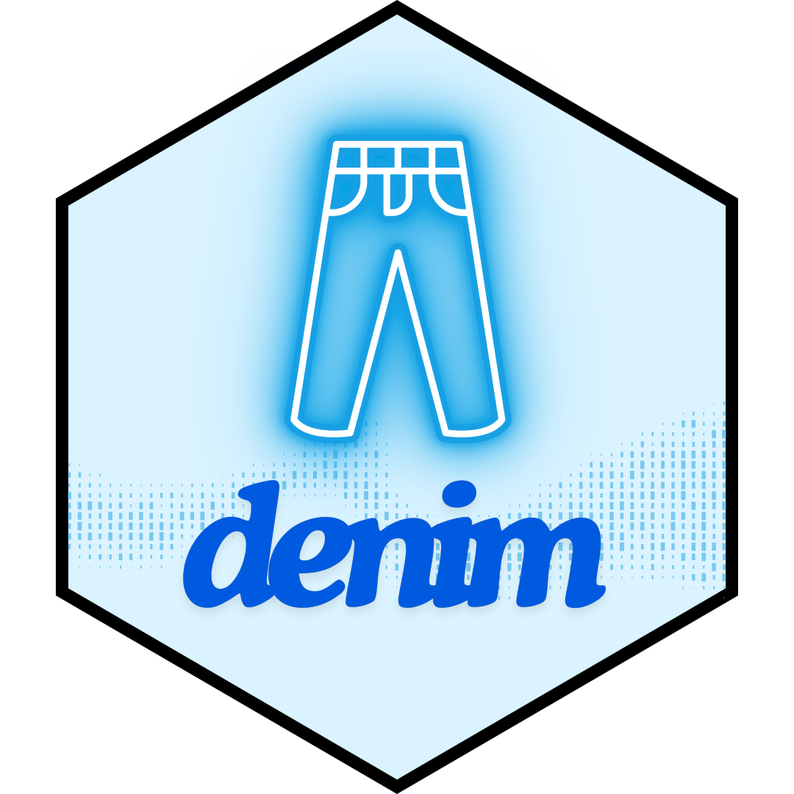
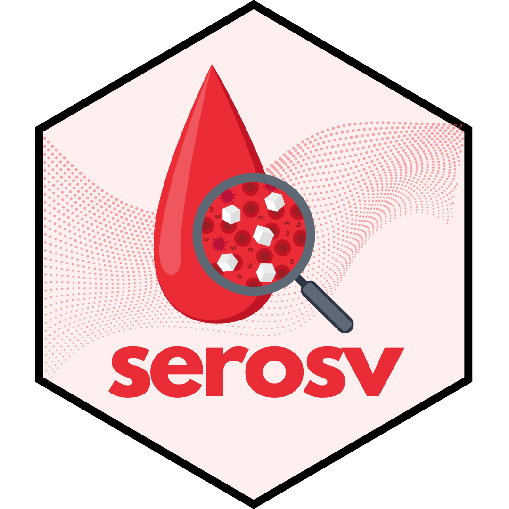
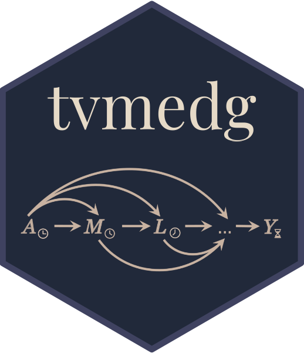
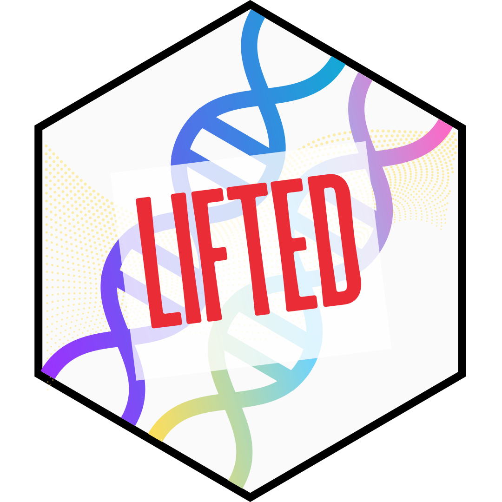

 denimRC++ Construct and simulate deterministic discrete-time compartmental models with customisable dwell time distributions Authors: Ong T, Phan TQA, Ha ML, Choisy M WebsiteCRANPaper
 serosvR Analyse serological data and estimate infectious diseases parameters Authors: Phan TQA, Pham NTN, Bui TL, Huynh NT, Choisy M, Ong T WebsiteCRAN
 tvmedgR Causal mediation analysis using g-computation Authors: Khuong QL, Pham NTN, Ong T, Getz K Website
 LiftedRbash Enhance genome conversion robustness during reference assembly updates Authors: Luu PL, Ong T, Dinh TP, Clark SJ GitHubPaper
MethPanelRbash Analyse multiplex bisulphite PCR sequencing to assess DNA methylation biomarker panels for disease detection Authors: Luu PL, Ong T, Loc TTH, Lam D, Pidsley R, Stirzaker C, Clark SJ GitHubPaper